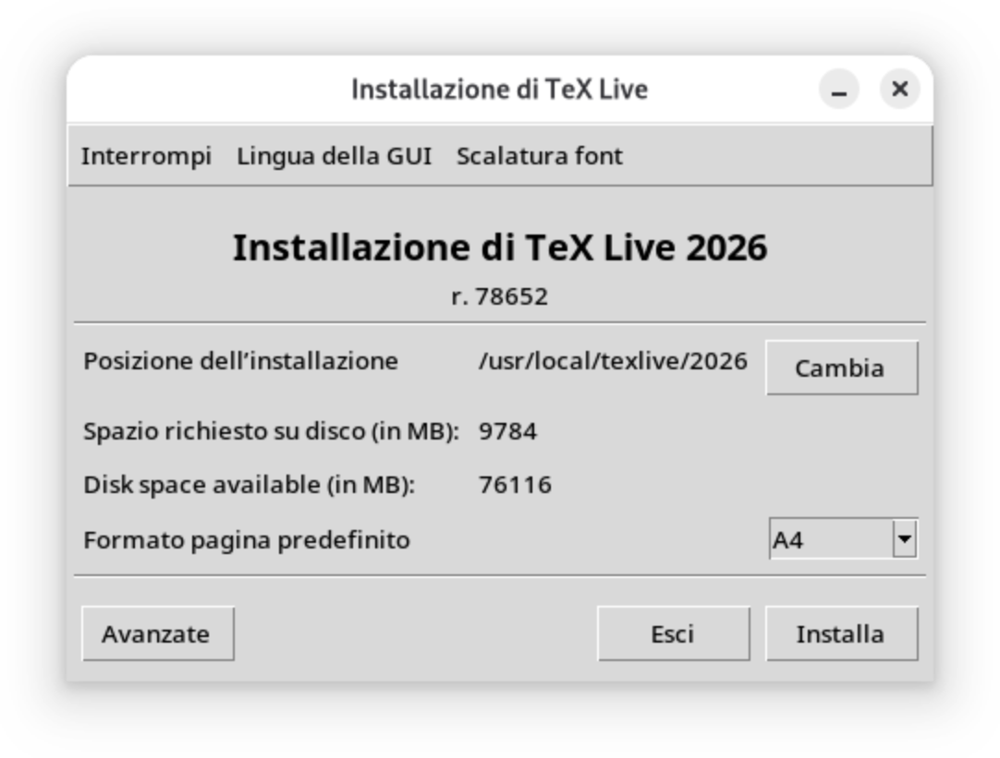
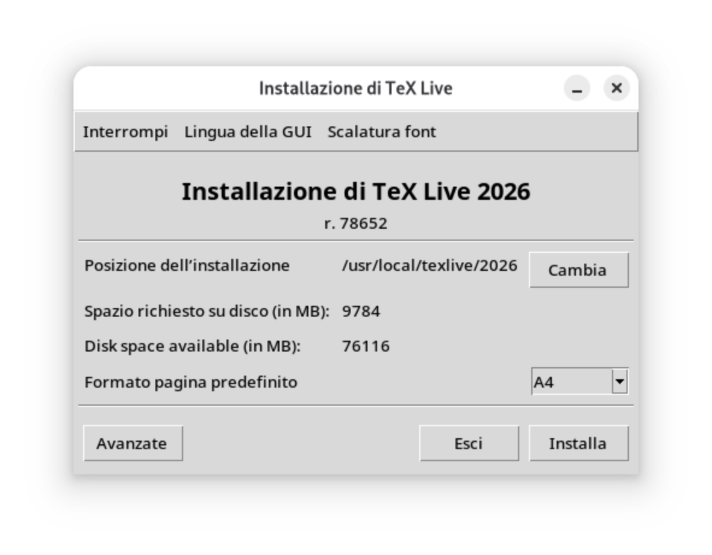
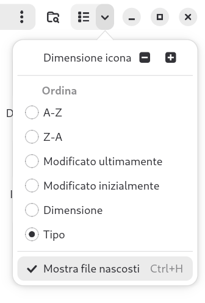

Questa lezione verte sull'installazione in locale di:
\(\TeX\) Live, che è una raccolta di
pacchetti?
Il funzionamento è del tutto simile alle librerie in qualsiasi linguaggio
di programmazione.
utili per ampliare le funzionalità oppure per aggiungere simboli
particolari,
come quelli matematici e fisici e tanto altro ancora.
\(\TeX\)Studio, che è un editor di testo, ottimizzato per questo scopo.
Nelle prossime lezioni verrà usato quest'ultimo, ma un utente più esperto è
libero di usare altri edito, come Visual Studio Code, che ha un'estensione
per il \(\LaTeX\) oppure Vim ed eseguire la compilazione da shell.
\(\TeX\) Live
GNU/Linux
L'installazione è molto semplice.
Il primo passo è scaricare il
file?
È possibile scaricarlo dalla
pagina ufficiale. per l'installazione.
Una volta scaricato si può estrarre l'archivio cliccando due volte oppure con
tasto destro > estrai a seconda delle distribuzioni.
Entra nella cartella estratta fino a trovare un file install-tl,
apri un terminale nella cartella ed esegui:
$ sudo ./install-tl -gui
sudo ti permette di installare le librerie con permessi di amministratore,
-gui permette di usare l'interfaccia grafica, semplificando
l'operazione.
Si aprirà questa interfaccia per la scelta del server da cui scaricare \(\TeX\) Live

Interfaccia per la scelta del server di TeXLive.
È possibile che il server venga scelto in automatico abbastanza velocemente da non
permettere all'utente di
visualizzare la schermata. Questo dipende dalla connessione.
Nel caso in cui si abbia la possibilità di scegliere, il server italiano dovrebbe
essere il più veloce.
La scheda successiva permette di scegliere il percorso di installazione, la lingue,
il formato e la spaziatura predefinita.
Se si è indecisi, conviene lasciare le impostazioni predefinite e premere
Installa. L'instalazione prevede di avere circa 10 GB liberi.

Scelta del percorso di installazione.
L'installazione può richiedere qualche ora e, dopo di ciò, si deve aggiungere
il percorso di installazione al $PATH in modo che il sistema
trovi in automatico il programma.
Nelle impostazioni del file manager bisogna attivare Mostra file nascosti

Nella cartella Home è possibile trovare il file .bashrc
(oppure .zshrc a seconda della distro). Apritelo con un editor di testo
e troverete una riga che inizia con export PATH=.
Qui aggiungete il percorso di TeX Live (in genere
/usr/local/texlive/YYYY/bin/PLATFORM)
subito dopo l'uguale, facendo attenzione
a non cancellare quello che era già presente, ma separarlo con i due punti.
export PATH=<percorso di TeX Live>:<scritte precedenti>
Questo dice al sistema di rileggere il file .bashrc dopo la modifica.
L'installazione è terminata, ma può essere utile controllare che tutto sia a posto con i
seguenti comandi:
$ which pdflatex
$ pdflatex --version
Il primo restituisce il percorso di installazione, che deve coincidere con quello impostato in
PATH,
mentre il secondo ci dice che versione del software è installata.